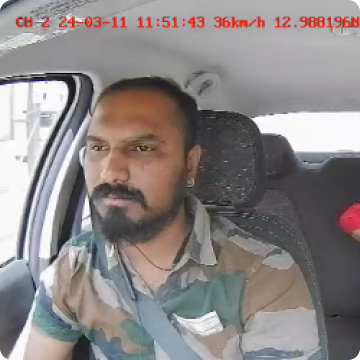
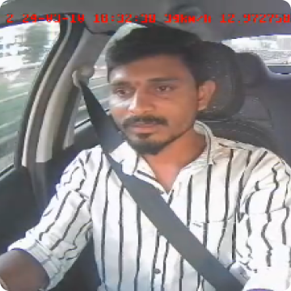

We utilize cutting-edge technology to prioritize safety.
Dash cam with dual lenses and real-time streaming and alerts
Capture crisp, high-definition visuals of both the front and cabin views, offering live streaming.
Driver Monitoring System (DMS)
Enhance safety by promptly recognizing indications of driver distraction and tiredness, alongside providing alerts for scenarios like detecting smoke, no seat belt and mobile phone usage.
Advanced Driver Assistance System (ADAS)
Receive alerts for road safety, including features such as warnings for lane departure and assistance with collision avoidance.
Two way communication
Communicate instantly within the vehicle and with external support through speaking and listening capabilities of the device.
Endless downloads and cloud storage capabilities
Safely store your driving data and videos on secured servers, ensuring the utmost security and accessibility from any location, at any time.
Utilize a unified dashboard for monitoring and overseeing your driver, passengers, and vehicle.
Access live footage, recordings, and route information, while managing your vehicle with advanced user access controls. Receive crucial notifications as needed.
- Live Streaming
- Real-time tracking.
- AI based Alerts
- Advanced Analytics
- API First
- Driver Insights
- Additionally accessible in Hindi, Kannada, Marathi, Tamil, Telugu, and Bengali. More language support on the way.
Our consumers trust us
- 
Our owner has put cameras in our cars to ensure everyone's safety and to avoid any problems on the road.
Passengers like knowing there are cameras in the vehicle. It makes them trust me more. Every driver should have them.
- 
Nowadays, having cameras in cabs is essential. It's about safeguarding my name and avoiding false accusations.
and so do our customers :)
We have put cameras in our cars to ensure everyone's safety and to avoid any problems on the road. Cautio has been a great partner for us in this journey.
Bharath Ramaswamy
Co-Founder, Vozi
Cautio has been a blessing for our university mobility fleet. Highly recommended for any mobility company looking for a reliable and advanced telematics solution.
Gaurav Chainani
Co-Founder, Indeanta Mobility
We've chosen to put cameras in our staff transport vehicles to keep everyone safe and accountable. It's a step towards taking care of our colleagues.
Rajiv Ravindran
Head of Experience, Namma Yatri